2025-12-05
CachyOS は Arch Linux をベースにしたディストリビューション。
Calamares で簡単にインストールできる。
日本語フォントが入っているので文字化けしない。
オンラインインストールを行うので、最新の環境をすぐに使える。
CPUに応じて最適化されたパッケージを使用するので、性能が向上する。
こちら。
Ventoy はブータブルUSBドライブを作成するツール。Ventoy のインストール後にOSのISOファイルをUSBメモリにコピーすると、そのOSを起動できるようになる。複数のISOファイルをコピーして、起動するOSを選択することもできる。
ventoy-*-linux.tar.gz をダウンロードして展開。
USBメモリを差し込んで Ventoy のインストーラーを起動。
./VentoyGUI.x86_64
インストール先を必ず確認。
新規の場合は「Install」を選択。USBメモリ内のファイルはすべて消える。
アップデートの場合は「Update」を選択。USBメモリ内のファイルは維持される。
CachyOS のISOファイルをUSBメモリにコピーする。
Kubuntu
などの利用者が多いOSのISOファイルもコピーしておく。CachyOS
のインストールが失敗したとき、別のOSのISOファイルがないと何もできなくなる。
USBメモリを挿してPCの電源を入れ、ブートメニューキーを押す。
ブートメニューキーは次のとおり。
| メーカー | ブートメニューキー |
|---|---|
| ASUS | F8 |
| ASRock | F11 |
| GIGABYTE | F12 |
| MSI | F11 |
ブートメニューキーを押すとブートデバイスの選択画面が出る。
あらかじめUEFIで「CSM
Support」を無効にしておくと、UEFIブートに対応していないデバイスが非表示になるので、選択が楽になる。

Ventoy のメニューでISOファイルを選択。
しばらく待つとデスクトップが起動する。

文字が小さいときは壁紙を右クリックして「Configure Display
Settings…」を選択。
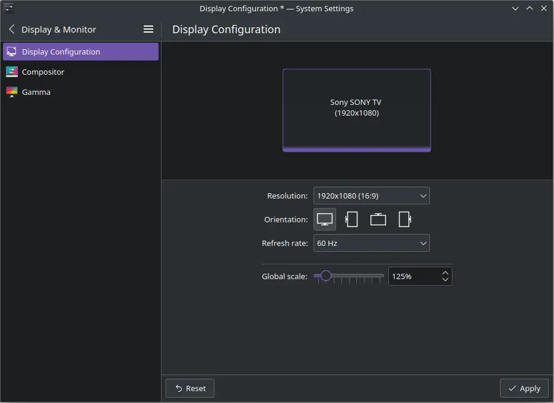
「Global scale」のスライダーを右に動かして「125%」にする。
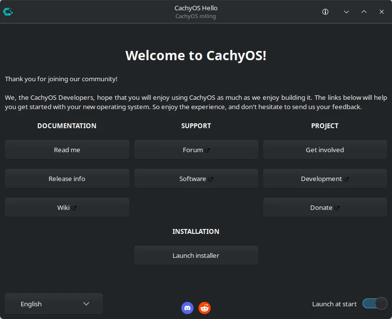
「Launch installer」をクリック。
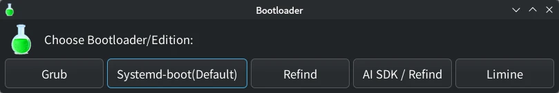
「Systemd-boot (Default)」をクリック。
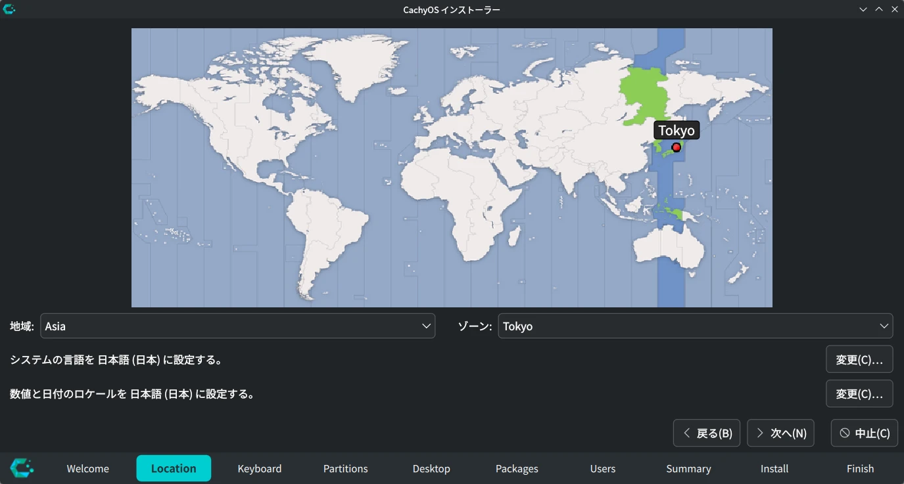
ゾーンが「Tokyo」になっているのを確認。「次へ」をクリック。
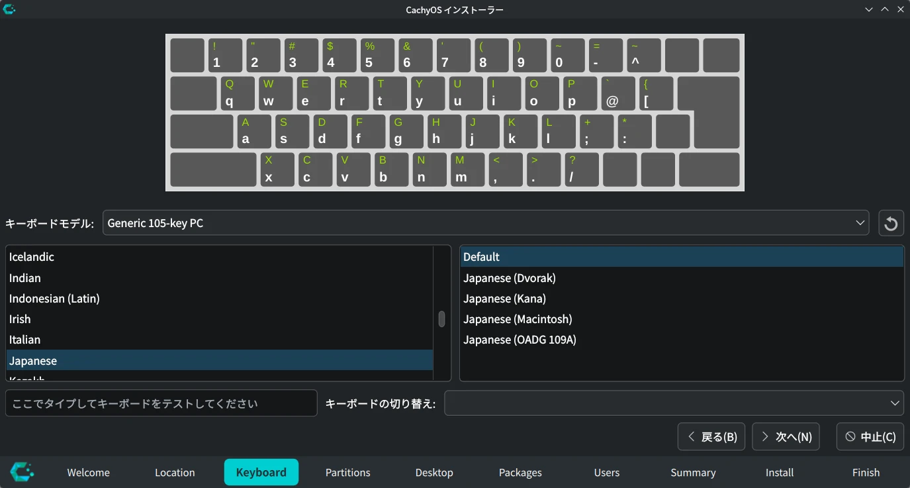
キーボードモデルが「Japanese」になっているのを確認。
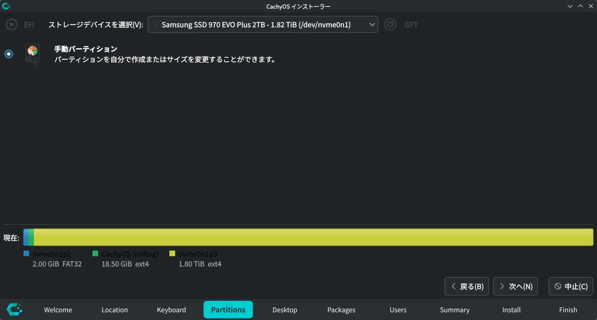
「手動パーティション」を選択。
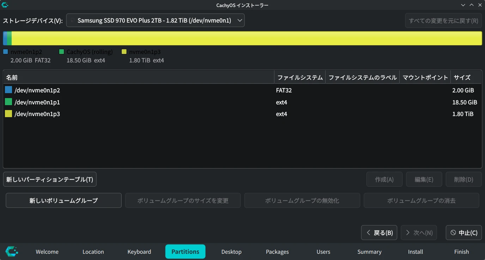
パーティションを作成。
私は次のようにしています。余裕をもたせるなら「/」は 30000 MiB
にする。
| パーティション | サイズ | フォーマット | ファイルシステム | フラグ |
|---|---|---|---|---|
| /boot | 2048 MiB | する | fat32 | boot |
| / | 20000 MiB | する | ext4 | なし |
| /home | 残り全部 | しない | ext4 | なし |
「/home」は初めて作成する場合のみフォーマット。
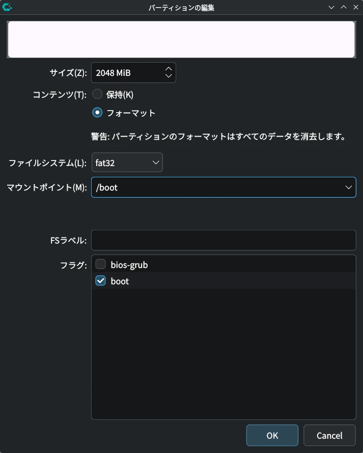
/boot パーティションの編集例。
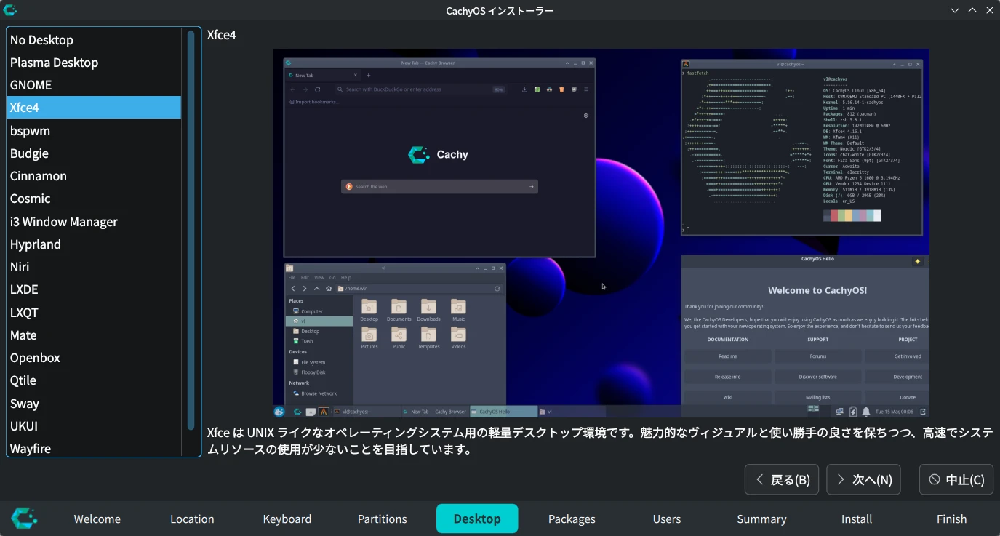
デスクトップを選択。
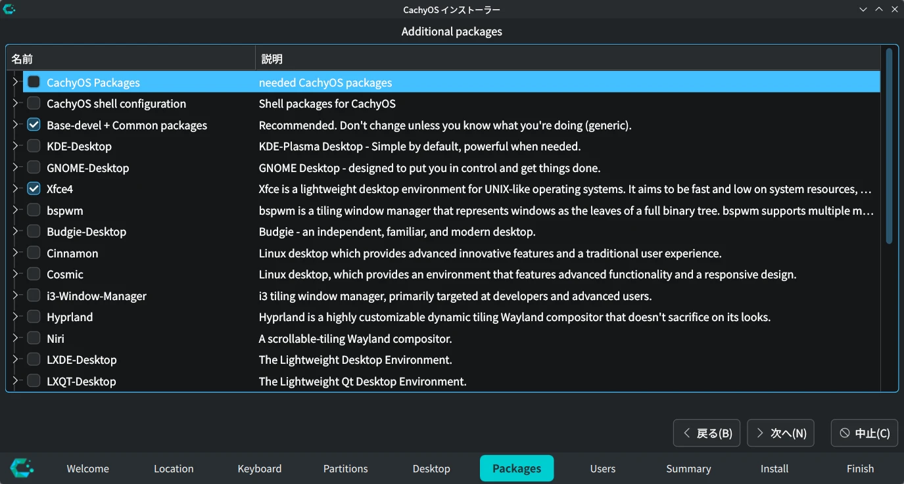
インストールするパッケージを選択。
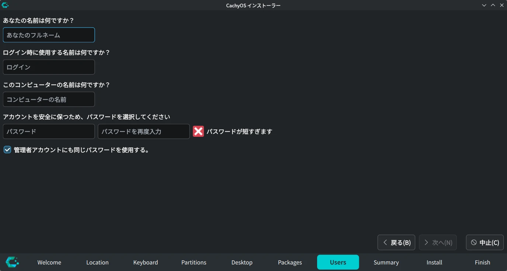
ユーザー名とパスワードを設定。
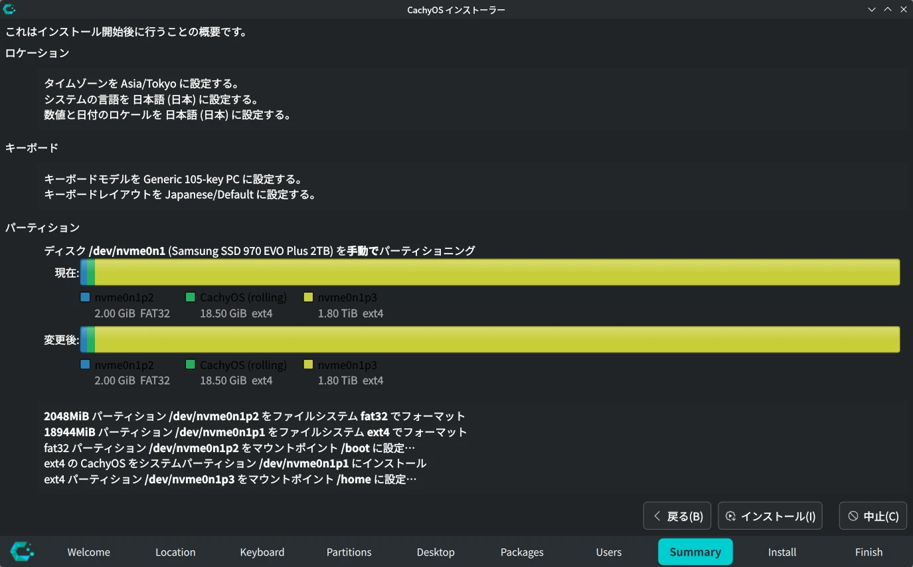
内容を確認して「インストール」をクリック。
インストールが終わったら再起動して設定を行う。